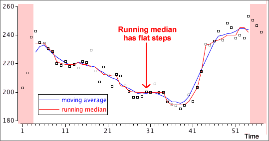
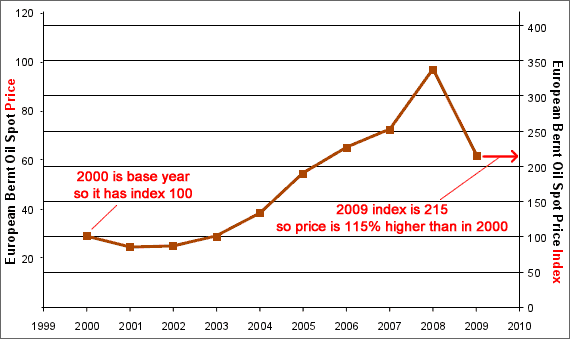

If you don't want to print now,
Time series data
Data sets whose measurements are made sequentially at regular intervals are called time series. We often want to forecast future values of a time series.
The importance of plotting
As with other data structures, the information in a time series is most easily understood from a graphical display. A time series plot is a type of scatterplot whose horizontal axis shows the time-ordering of the values. Successive crosses are often joined by lines.
Types of pattern
| Trend | Seasonal variation | ||||||||||||||||||||||||||||||||||||||||||||||||||||||||||||||||
|---|---|---|---|---|---|---|---|---|---|---|---|---|---|---|---|---|---|---|---|---|---|---|---|---|---|---|---|---|---|---|---|---|---|---|---|---|---|---|---|---|---|---|---|---|---|---|---|---|---|---|---|---|---|---|---|---|---|---|---|---|---|---|---|---|---|
Trend refers to long-term increases and decreases in the values.

Moving averages are also called running means. In the example below, a 7-point moving average replaces each value with the mean of it and the 3 adjacent values on each side.
If averaging over an even number of values, the smoothed value is for a time between those of the data values, such as "year 2005.5". A second stage of averaging for even run lengths To provide smoothed values at the same times as the raw data, we often take a further 2-point moving average.
This is equivalent to giving half weight to the two outermost values. If based on moving averages of 4, this is called a 4-point centred moving average. These centred averages are particularly useful when analysing seasonal data. For example, 12-point centred moving averages are often used for monthly data. 4.2.3 Robust smoothingOutliers and running medians Since medians are less sensitive to outliers than means, a more robust alternative to running means replaces each value by the median of it and adjacent values. A 3-point running median is:
and higher-order running medians will use more adjacent values. Comparison of means and medians

where the smoothing constant, a, is a value between 0 and 1. The smoothed value is a 'weighted average' of the actual value at that time and the previous smoothed value. Alternative formula The formula can also be expressed as
For example, if a = 1/2 ,
The smoothed value puts more weight on the recent past (which is an intuitively sensible thing to do).
Forecasting future values If the most recent value is at time i, we forecast the value at time i + k to be the last exponentially smoothed value,
Time series with trend If the time series has an increasing trend, exponential smoothing will tend to underestimate the trend. Similarly, the smoothed series will be too high if there is a decreasing trend.
We can try to predict yt from its previous value by fitting a straight line by least squares to this scatterplot, yt = b0 + b1 yt−1 This is a type of auto-regressive model, and is usually called an AR(1) model.
Forecasting further into the future The model only directly predicts one time period into the future,
but we can predict further into the future using:
4.4.3 AR(1) model and trendForecasting when there is trend The method described in the previous page works well if there is no trend in the time series. If there is trend, we should remove it before using an AR(1) model. The steps for forecasting a future value are therefore...
(There are more efficient ways to do steps 1 and 2 together, but these are beyond the scope of an introductory course.) 4.4.4 Trend or autocorrelation?Dangers of over-interpretation Very strong autocorrelation in a time series can result in apparent trends, even when there is no real trend underlying the series. Autocorrelation and trend are especially difficult to distinguish in short time series. You should therefore be wary of extrapolating a trend into the future if there is high autocorrelation. 4.4.5 Cyclical patternsMany time series change in cycles, with increases and decreases that cannot be explained by a smooth trend line. Seasonal patterns Some cycles are seasonal. Seasonal patterns are distinguished by a period that repeats exactly — for example, monthly data has a period of exactly 12 months. Seasonal patterns are not usually referred to as 'cyclical'. Cyclical patterns Other cycles repeat much less regularly. Sun-spot activity has cycles of approximately 11 years, and the 'business cycle' can be anywhere between 3 and 10 years. In both cases, different cycles are not exactly the same length. The AR(1) method can be used to obtain forecasts for cyclical data with irregular cycle lengths. We will not distinguish cyclical patterns from other forms of autocorrelation here. 4.5 Seasonal data
4.5.1 Seasonal patternsSeasonal data In monthly or quarterly data, there is often a pattern of peaks and troughs that repeats in a similar way each year. Daily data often show a pattern that repeats each week, and hourly data often have a daily pattern. These are all called seasonal patterns.
The diagram below removes a monthly seasonal effect with 12-point moving averages.
Using per capita data Looking at trends in 'quantity' values (e.g. a country's total alcohol consumption) is misleading over a period in which the population increases. It is more meaningful to examine quantities per person. Always consider carefully whether a different variable would describe the data more meaningfully. 4.6.5 Types of time series dataA classification of time series Time series data arise in various different contexts.
The measurements themselves may be:
In this e-book, all of the above types of time series are analysed in the same way. 4.7 Index numbers
4.7.1 IntroductionIndex numbers An index number measures the value of an item (or group of items) at a point in time as a percentage of the value of the item (or group of items) at another fixed time point. Price and quantity indices Price indices summarise how the prices of items vary over time. Quantity indices describe how the quantities of items (e.g. imports) vary over time. We only consider price indices in this section, but many of the principles and formulae carry over to quantity indices. Common business indices The Consumers Price Index (CPI) in a country summarises the overall price level of goods and services purchased by households. Other price indices describe prices of energy, accommodation and various classes of food. Stock market indices such as the Dow Jones (USA), FTSE 100 (UK) and NZX50 (New Zealand) summarise changes in the value of company shares. Other stock market indices such as the NASDAQ (technology) describe particular market segments. 4.7.2 Simple price indexSimple price index This expresses the price of a single item as a percentage of its price at a base time (usually in the past). If P0 is the price in the base year and Pi is the price in year i, then the price index for year i is
 4.7.3 Aggregate price indexAn aggregate price index summarises the prices in a 'basket' of several related items. Unweighted aggregate price index The simplest is a simple price index applied to the sum (or average) of n item prices,
where Pi(j) and P0(j) denote the prices of the j-th item at time i and at the base time respectively. 4.7.4 Laspeyres and Paasche indicesTaking account of quantities Some items in the 'basket' are usually more 'important' than others.
The price of Snapper should have much less influence on the aggregate index than the other types of fish, since much less of it is consumed. Weighted price index A weighted price index is more influenced by items with higher consumption and is based on the total amount spent by an average consumer. In 2005, this was: 15.4 × 19.20 + 13.7 × 18.41 + 4.6 × 28.73 = 680.06 Assuming the same consumption for all years,
The Laspeyres index is a simple price index applied to these totals.
Paasche index The Laspeyres index uses quantities in the base year as weights. The Paasche index is similar but is based on quantities in the current period. We only consider the Laspeyres index here. Formula for Laspeyres index An equivalent mathematical formula for the index is:
where Q0(j) denotes the quantity of the j-th item in the basket at the base time. 4.7.5 Deflating a time seriesOther adjustments of time series Many time series are affected by more than one variable changing over time. The influence of an ancillary variable can be removed with an index that summarises its effect. If Xi denotes the time series value and Ni is the index for the ancillary variable, the ancillary variable's effect can be removed by:
This is called deflating the series. Correcting for inflation The Consumer Price Index (CPI) is often used to adjust for inflation. If the CPI was 953 in 2005 and 1044 in 2008, the price of an item in 2008 ($25.43) can be expressed in "2005 dollars" as:
Prices usually change much less over time in 'constant dollars' than in raw dollars.
| |||||||||||||||||||||||||||||||||||||||||||||||||||||||||||||||||